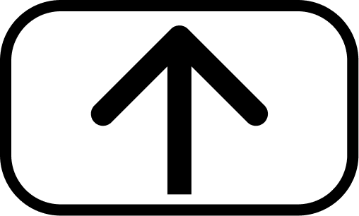

South exit Oedo line
Keio line
Shinjuku line
Odakyu line
Lumine building 1
Shinjuku Park
NEWoMan building
Yoyogi Station
Yoyogi Park
Bus Gate Bus gate
NEWoMan
Odakyu Southern Tower
Shinjuku Maynds Tower
Miraina Tower
Southeast exit Lumine building 2
Shinjuku 4-chome station
Shinjuku park
Minami Shinjuku station
Shinjuku Park

2F

South Exit
역 빌딩
루미네 1 빌딩
목적지
루미네 1,2 백화점, 뉴우먼, 신주쿠 공원
환승
오에도선, 게이오선, 신주쿠선, 오다큐선
Bus gate
역 빌딩
미라이나 타워, 뉴우먼
목적지
오다큐 서던타워, 신주쿠 마인즈타
환승
고속버스터미널
Southeast Exit
역 빌딩
루미네 2 빌딩
목적지
신주쿠 공원,신주쿠 욘초메역 방면, BEAMS
Shinjuku park
이름
Shinjuku Gyoen
소개
신주쿠 공원은 일본 정원과 정형식 정원, 드넓은 잔디밭 등 자연경관을 즐길 수 있는 풍경식 정원 등 세 가지 특징 있는 정원이 있다. 봄에는 약 900 그루의 벚나무가 우아한 벚꽃으로 공원을 핑크빛으로 물들인다. 가을에는 아름다운 단풍과 황실 관련 국화 화단전을 즐길 수 있다. 정원과 온실에는 다양한 식물이 있기 때문에 신주쿠교엔은 일 년 내내 방문할 가치가 있는 장소다.
주소
〒160-0014 Tokyo, Shinjuku City, 11 Naitomachi